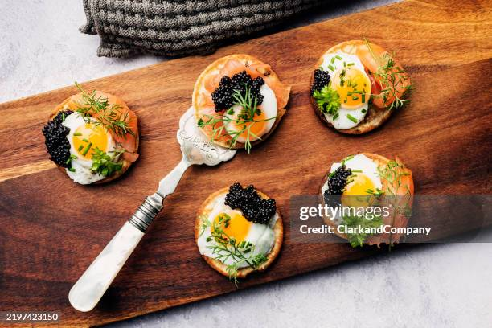

Salmón y caviar
Ingredientes
- Salmón fresco (preferiblemente lomo o sashimi grade)
- Caviar (beluga, osetra, sevruga o el que prefieras)
- Queso crema o crème fraîche
- Pan brioche, blinis o tostadas finas
- Eneldo fresco
- Cebolla morada muy picada
- Alcaparras
- Limón
- Pimienta negra recién molida
- Sal marina suave
- Palta/aguacate (opcional)
- Pepino en rodajas finas (opcional)
- Huevos de codorniz (opcional)
- Manteca/mantequilla para tostar el pan
- Aceite de oliva suave
Preparación
- Tostar ligeramente los blinis, brioche o pan elegido.
- Mezclar queso crema o crème fraîche con unas gotas de limón y pimienta.
- Untar una capa fina de la mezcla sobre el pan.
- Cortar el salmón en láminas o cubos pequeños, según presentación deseada.
- Colocar el salmón sobre la base preparada.
- Agregar unas pocas alcaparras y cebolla morada picada finamente.
- Incorporar rodajas finas de pepino o palta si se desea.
- Añadir una pequeña porción de caviar encima del salmón.
- Decorar con eneldo fresco.
- Terminar con unas gotas de limón y un toque muy suave de aceite de oliva.
- Servir inmediatamente y mantener frío hasta el momento de servir.
